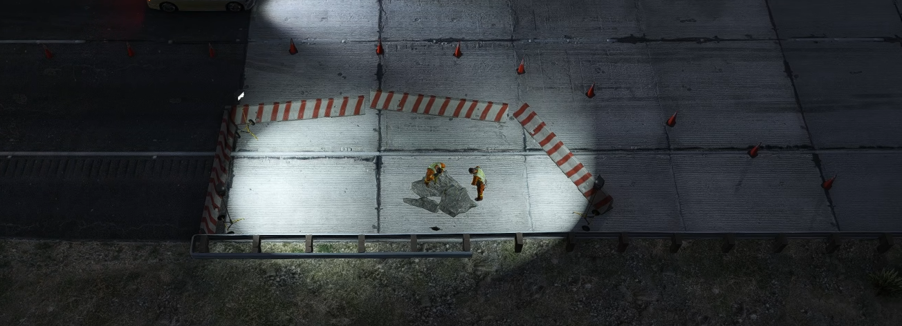
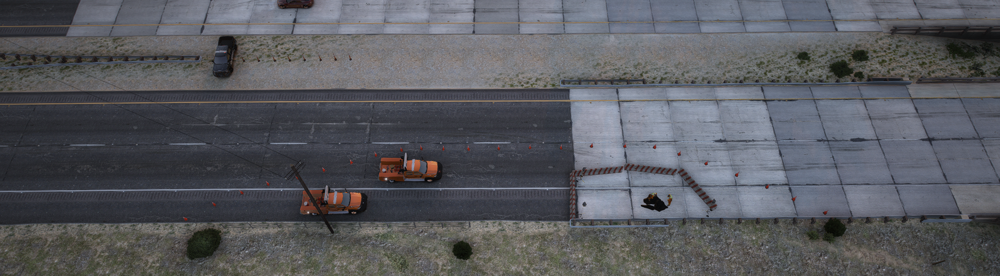
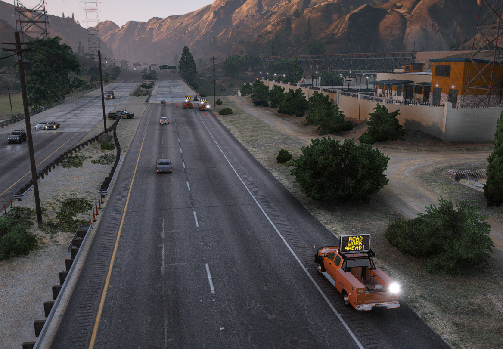
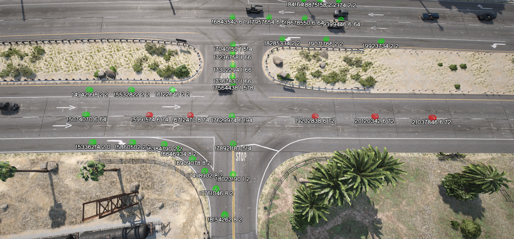

Department Training Academy
Official manual governing work zone geometries, vehicle positioning, lighting angles, digital node pathfinding, and subdivision qualifications.
Core Department Orientation & Operations
Headquarters facilities, primary staging yards, shift workflows, vehicle circle-checks, and radio telephony syntax.
Los Santos Metropolitan Headquarters
796 Popular Street, East Los Santos
Primary headquarters for city operations. Features an underground staff parking structure, command offices, fleet repair bays, heavy tractor staging, and immediate access to the Del Perro, Olympic, and La Puerta Freeways.
civtahoe), Dodge Ram 3500 HDs (civramdot1), Ford F550 Rollbacks (f550rollback1), Arrow Boards, and heavy transport trailers.
Blaine County Regional Depot
228 Joshua Road, Grand Senora Desert
Main operations hub for northern county responses. Features large aggregate storage, salt/brine tanks, off-road recovery staging, and direct response corridors to Route 68, Senora Freeway, and Paleto Bay.
kenworthwrecker), Navistar Rollbacks, Bulldozers (dozer), Dump Trucks (tiptruck2), Salt Spreaders, and boat trailers.
Standard Shift Lifecycle (10-41 to 10-42)
Operational WorkflowJoin the SADOT in-game radio channel. Announce 10-41 on duty with callsign and assigned depot.
Spawn your rank-authorized rig. Confirm orange livery (Color 24), SA DOT plate, and lightbar extras.
Check active work orders on the CAD. Monitor in-game /services chat for citizen and LEO callouts.
Return rig nose-out with >1/4 fuel. Submit your Patrol Log and MFO logs before marking 10-7.
📻 Radio Telephony & Voice Callout Standards
Strict Brevity MandateGeneral Department Scenarios
Realistic operational situations demonstrating everyday procedural compliance.
You spawn into District 1 (796 Popular St). You retrieve your uniform from the locker room matching your rank texture index. You spawn your assigned rig (civtahoe), walk around the vehicle, verify livery is official SADOT Orange (Color 24), check plate reads SA DOT, and verify vMenu Extras 1, 2, 3, 4, 6, 7, 11, 12 are enabled. You hop in, check fuel is at 100%, tune your radio to SADOT Primary, and broadcast: "Dispatch, DOT-105 is 10-41, 10-8 from Popular Street."
While inspecting a pothole on Innocence Blvd, a civilian altercation erupts on the sidewalk and a firearm is drawn. Protocol: Cease work instantly. Do not attempt to de-escalate with physical force or draw less-lethal gear. Drop your shovel, retreat to your state vehicle, lock doors, accelerate away to the nearest police station (Davis), and key your radio: "10-99, 10-99! Shots fired near Innocence Postal 714, DOT-105 disengaging, request SAMPD assistance."
Highway Incident Management & Patrol
Defensive safety corridor establishment, live-lane push-offs, roadside diagnostics, and multi-agency collision staging.
The 45-Degree Defensive Staging Rule
When responding to a disabled vehicle on a freeway shoulder (Del Perro, Senora Fwy, Olympic):
- Stage your utility truck 25 to 50 feet upstream of the target vehicle.
- Park at a 45-degree angle toward the outer guardrail or wall. If a vehicle rear-ends you, the truck deflects into the wall rather than into you and the motorist.
- Turn your front wheels completely away from the live travel lanes.
- Activate roof amber strobes and deploy rear directional arrow boards facing incoming traffic.
Rapid Roadside Resolution
Aim to resolve roadside disablements safely within 5 minutes:
- Emergency Fuel: Roleplay retrieving the red 2-gallon OSHA gas can from the bed. Only dispense 1–2 gallons so the motorist can reach the nearest service station.
- Tire Replacement: Place wheel chocks on the opposite axle, place the hydraulic jack on solid frame points, loosen lugs in a star pattern, and torque to spec.
- Push-Bumper Clearance: If stalled in a live lane, align your heavy rubber push-bumper (
civtahoe/civramdot1), brief the driver to stay in neutral, and push at <5 MPH onto the shoulder.
LEO / SAFR Crash Scene Support
When supporting police and fire departments at multi-car pileups:
- Police Contact Pocket: Park your truck behind the rearmost police cruiser, using arrow boards to deflect traffic away from the officer contact pocket.
- Tactical Flood Lighting: At night, angle utility scene lights across the medical triage or extrication zone without blinding oncoming drivers.
- Glass & Debris Sweeping: Once police release evidence, sweep loose glass and body parts into the shoulder buffer before reopening lanes.
Practical Patrol Scenarios & Transcripts
Step-by-step roleplay execution for highway incident management operators.
Dispatch: "Unit 102, report of a stranded black sedan on Del Perro Freeway eastbound, narrow left shoulder near Postal 804."
Execution: Approach with amber beacons on. Position your Dodge Ram 3500 HD 35 feet behind the sedan angled at 45 degrees towards the center concrete divider. Toggle rear arrow board to sweep traffic right into Lane 2. Exit vehicle curbside (driver door facing divider, away from live traffic). Introduce yourself: "DOT-005 Operator Ramsay Wolfe, stay inside your vehicle with your seatbelt on while I set up our safety buffer." Retrieve trolley jack and impact wrench from your side tool compartment. Roleplay loosening lugs, jacking the chassis, swapping the spare, tightening in a cross-star pattern, and lowering. Have driver sign Section 14 waiver on your tablet. Clear scene and call 10-33.
Situation: Stalled Emperor sedan dead in Lane 1 with traffic swerving at 75 MPH.
Execution: Rigging a flatbed winch in a live lane poses lethal danger. Approach in your heavy utility rig with rubber push-bumper (civramdot1). Slow traffic behind you using flashing ambers. Pull flush against the rear bumper of the stalled vehicle. Instruct driver via PA speaker: "Driver, put your vehicle in NEUTRAL and keep both hands on the wheel to steer." Gently apply throttle, pushing the vehicle forward at 3–5 MPH until you cross lanes onto the wide right shoulder. Disengage, establish your 45-degree angled buffer, and begin roadside diagnostics or request a flatbed.
📋 Practical FTO Evaluation Rubric
Sign-off RequirementTowing & Recovery
Hydraulic rollback bed operations, heavy boom winching, dual snatch-block rollover uprighting, and impound chain-of-custody.
Flatbed / Rollback Mechanics f550rollback / ramrollback
[Down Arrow] : Slide bed backwards & tilt apron flush to pavement[Up Arrow] : Slide bed forward & lock into travel transport mode[Right Arrow] : Free-spool/unwind winch cable hook[Left Arrow] : Winch target vehicle smoothly up onto bed[E] : Fasten high-strength wheel tie-down straps[G] : Detach winch cable from front tow bridleHeavy Wrecker Rollover Physics kenworthwrecker
When recovering overturned semi-trucks, cement mixers, or vehicles in ravines:
- Deploy Outriggers: Toggle
Extra 5in vMenu before winching to plant hydraulic stabilizer feet into firm pavement. - Dual Snatch-Block Rigging: Wrap heavy Grade-80 transport chains around the structural A/B pillars or chassis frame. Never hook to suspension rods or cosmetic bumpers.
- Controlled Uprighting: Slowly tension dual cables to roll the casualty back onto all four wheels without flopping it over onto its other side.
- Wheel-Lift Stinger: Lower stinger (
Extra 10), cradle drive tires with L-arms, insert safety pins, and attach magnetic tow lights.
Practical Towing & Recovery Scenarios
Detailed field operations covering vehicle winching, rollover recoveries, and impound disputes.
Call: BCSO Deputy requests a flatbed for a stolen sports car seized during a felony stop. Upon arrival (10-23), introduce yourself to the deputy. Verify Deputy Badge and ID. Conduct a 360-degree walkaround recording pre-existing damage (broken rear glass, scraped rims). Lower flatbed bed ([Down Arrow]). Attach nylon bridle straps to factory tow recovery points. Winch car onto deck ([Left Arrow]). Secure 4-point tire harnesses ([E]). Raise and slide bed forward into travel lock ([Up Arrow]). Obtain Deputy signature on Section 14 of the MFO Form. Transport directly to the Paleto Bay municipal impound lot.
Situation: Articulated semi-truck tipped on its side blocking Route 68. SAFR has extricated the driver and police released the scene to SADOT.
Mechanical Limitation & Mandatory Secondary Rig: Due to FiveM vehicle physics and script limitations, the Kenworth wrecker cannot physically winch an overturned vehicle upright on its own. Therefore, a secondary apparatus equipped with an operational front-bumper winch (such as the Ford F550 Rollback f550rollback2 with Extra 4 push bar/winch or a winch-equipped utility rig) is strictly mandatory for any callout involving stuck, rolled, or tipped vehicles.
[E] : Take the hook from the rig[H] : Drop the hook[E] : Attach hook to target vehicleHold [Page Up] / [Page Down] : Wind winch in / out[H] : Take hook from target vehicle[E] : Reattach hook to original vehicle
Execution Workflow:
1. Stage your Kenworth Wrecker (kenworthwrecker) 20 feet opposite the pivot side with stabilizer outriggers planted (Extra 5) and rear amber beacons flashing.
2. Position the secondary front-winch vehicle directly aligned with the casualty's roll vector.
3. Visually confirm the casualty's cabin is 100% clear of occupants.
4. Walk to the front bumper of the secondary rig, press [E] to take the hook, walk to the top-side chassis frame rail of the tipped semi-truck, and press [E] to secure it.
5. Hold [Page Up] to slowly wind the winch in under power, pulling the center of mass over until the tractor chassis rolls smoothly back onto its tires.
6. Walk to the casualty, press [H] to take the hook, return to your secondary truck, and press [E] to reattach it to the bumper.
7. Back the Kenworth up, lower the rear stinger wheel-lift (Extra 10), cradle the semi-truck's drive axle, pin safety chains, attach magnetic tail lights, and tow back to District 2 depot.
Mandatory Impound Chain-of-Custody
Every impounded vehicle must have an associated Master Field Operations (MFO) Form. When executing police impounds for SAMPD or BCSO, record the requesting officer's name, badge number, and legal authority (e.g., Evidentiary Hold, Vehicle Seizure, Driver Arrested). Transport the vehicle directly to the designated municipal impound lot.
Maintenance & Infrastructure
Pothole patching, guardrail and barrier restoration, culvert clearing, storm drainage, and tactical work zone illumination.
1. Night Operations & Work Zone Illumination Standards
Mandatory safety enclosure lighting and floodlight orientation to preserve night worker safety.

Work zones must be illuminated using portable floodlight stands or truck-mounted light masts. Floodlights must be angled strictly downwards into the active excavation cavity or repair zone. Under no circumstances should high-intensity lights face oncoming traffic, as blinding drivers causes high-speed collisions.
As demonstrated in FIG 3.1, the actual work area must be enclosed on all three exposed sides by red-and-white striped crash barriers, backed by advance cones. This creates a solid physical pocket preventing technicians from accidentally stepping into live adjacent lanes.
Practical Maintenance Scenarios
Realistic procedures covering asphalt restoration, guardrail repair, and storm drainage.
Situation: Severe 6-inch pavement collapse causing tire blowouts at night on Great Ocean Highway.
Execution: Stage arrow truck 250 ft upstream. Close Lane 1 with a 50-ft cone taper. Deploy perimeter striped barriers around the pothole (as shown in FIG 3.1). Deploy dual generator floodlights angled 45 degrees downward into the cavity to illuminate the work zone without blinding southbound traffic. Use compressed air wand to blow out dust and moisture. Spray asphalt tack coat emulsion. Shovel hot asphalt patch mix in 2-inch lifts. Run the walk-behind vibratory plate compactor until flush with road grade (1/4 inch tolerance). Apply joint sealant, pack tools, pick up barriers, and clear.
Situation: A high-speed crash sheared 30 feet of W-beam guardrail off Palomino Freeway.
Execution: Establish shoulder closure with warning triangles. Unbolt crushed galvanized steel panels. Use hydraulic extraction jack to pull snapped wooden posts. Drive new steel I-beam posts into ground. Mount replacement 12-gauge W-beam panels, ensuring splices overlap away from oncoming traffic flow so errant vehicles cannot spear the edge. Torque all splice bolts to 75 ft-lbs.
Pothole & Pavement Restoration
Damaged road surfaces cause tire blowouts and swerving collisions. Standard repair sequence:
- Isolate the Work Area: Stage arrow truck upstream with a 50-foot cone taper.
- Clean the Cavity: Roleplay sweeping loose gravel and water out using compressed air or hand brooms.
- Tack Coat Application: Spray liquid asphalt emulsion binder across all edges of the pothole.
- Hot/Cold-Mix Fill: Shovel fresh asphalt mix into the hole in 2-inch lifts.
- Mechanical Compaction: Run a vibratory plate compactor until flush (1/4 inch tolerance above grade).
Guardrail & Jersey Barrier Reset
Restoring highway retention systems after collisions:
- W-Beam Panel Extraction: Unbolt crushed galvanized steel sections. Extract sheared wooden or I-beam support posts.
- Post Driving: Drive replacement posts flush into the road embankment. Re-bolt new panels with splices overlapping away from oncoming traffic.
- Concrete Jersey Barriers: For displaced 4,000-lb barriers, rig a heavy wrecker or front loader to hoist and re-align barriers flush with the road line.
Traffic Control & Flagging
Work zone geometric tapers, multi-vehicle shadow truck staging, digital node manipulation (/traffic), and single-lane alternating flagging.
1. Geometric Highway Tapers & Barrier Pacing
Standard MUTCD geometry for high-speed freeway closures and merge tapers.

Formula: L = W × S
• L = Taper Length (Feet)
• W = Lane Width (Standard 12 Feet)
• S = Speed Limit (MPH)
Example: 12 ft × 65 MPH = 780 Feet (approx. 20–25 car lengths in FiveM).
GTA V vehicle collisions create physics voids between props. Cones, pylons, and barricades must be spaced at strict 5-foot intervals (one walking stride). Placing cones further than 5 feet apart allows AI and civilian vehicles to clip straight through your perimeter into the work zone.
2. Work Zone Vehicle Placement & Shadow Truck Hierarchy
Multi-vehicle staging setup showing how state apparatus must be positioned to shield workers.

Staged on the far right shoulder 500–1000 ft upstream of the closure displaying ROAD WORK AHEAD! to warn incoming high-speed traffic early.
Positioned inside the closed lane with rear arrow board actively directing traffic into open lanes. Acts as a heavy physical buffer against errant drivers.
Maintains a 50–100 ft buffer space between the shadow truck and the enclosed barricade box, ensuring workers have complete room to operate machinery safely.
3. Digital Traffic Node Manipulation (/traffic)
Governing Local AI pathfinding to detour computer-driven traffic around active closures.

Open paths. Local AI traffic will navigate through Green nodes REGARDLESS of whether physical cones or barricades are sitting on top of them. Always disable nodes under your physical work perimeter!
Closed paths. Standard Local vehicles avoid Red nodes. Note: Off-road vehicle classes (4x4s, SUVs, dirtbikes) may occasionally ignore Red nodes-maintain physical shadow trucks!
As illustrated in FIG 4.3, the straight through-lanes are toggled RED (disabled), while the turning lane nodes onto the cross street remain GREEN. If an operator disables straight nodes without leaving valid Green turning paths, Local AI pathfinding completely fails, causing drivers to panic, disregard closures, and plow directly through barricades.
Practical Traffic Control Scenarios
Comprehensive staging breakdowns for complex intersections and lane closures.
Execution (Matching FIG 4.1 & FIG 4.2):
1. Advance Warning: Operator 1 stages Advance Warning Truck (civf150/civf550dot) on far right shoulder 800 ft upstream, VMS board flashing: ROAD WORK AHEAD!
2. Taper Construction: Pacing at strict 5-foot intervals, lay a 20-cone transition taper directing traffic from Lane 1 into Lane 2.
3. Shadow Truck: Operator 2 positions Ford F550 Arrow Truck (civf550dot) inside the closed lane, amber arrow board pointing left.
4. Buffer Space: Maintain an open 75-foot buffer zone between the shadow truck and the workers.
5. Work Area Enclosure: Construct striped barricade box around the construction pit as seen in FIG 3.1.
Execution (Matching FIG 4.3): A downed power pole requires full closure of westbound Route 68. Stand safely on the sidewalk and open /traffic. Aim at westbound through-lane nodes (Node 15991574, 16712470, 19202838) and press [E] to toggle to RED. Verify turning nodes leading north into Joshua Road (Node 16843542, 17040150) remain GREEN. Press [X] to confirm. Watch AI traffic: vehicles smoothly execute right turns into the detour without piling up against your barricades. Upon job completion, reopen /traffic, toggle all Red nodes back to Green, and confirm before clocking 10-8.
4. Single-Lane Alternating Flagging (/flagman)
Manual Traffic ControlWhen one lane of a two-lane rural road (Route 68, Senora Fwy, Tongva Valley) is closed for repairs:
- Type
/flagmanin chat to equip the official state STOP/SLOW paddle. Press[Delete]when finished. - Stand on the outer paved shoulder, never stand in the center of the active travel lane.
- Coordinate with the opposite flagger via department radio: Flagger 1 displays STOP and holds queue while Flagger 2 displays SLOW and releases queued traffic.
Heavy Machinery & Logistics
Dump trucks (tiptruck2/rubble), bulldozers (dozer), forklifts (fork), and lowboy multi-axle transport (trlowboy).
Lowboy Trailer Loading (trlowboy) w900 + trlowboy
Transporting tracked equipment across state highways:
- Unhitch Neck: Disconnect tractor with
[H]. Toggle Extra 1 OFF and Extra 3 ON in vMenu to drop ramps flat to the ground. - Load Equipment: Drive the dozer or heavy plant up the neck onto the trailer deck.
- Cargo Securing (/attach): Execute
/attachin chat. Aim at the trailer bed, press Enter, then aim at the dozer and press Enter. Adjust translation with Numpad keys and press Numpad Enter to lock entities. - Re-Couple Neck: Toggle Extra 3 OFF and Extra 1 ON. Back tractor up and hitch with
[J].
Earthmoving & Dump Operations
Handling large aggregate volumes, rockslides, and roadbed collapses:
- Spotter Mandate: Operators running bulldozers or backing large dump trucks must always have a ground spotter with high-vis gear directing traffic around blind spots.
- Bulldozer Transit Speed: Keep blades low (12–18 inches above ground) during transport. Avoid sharp pivot turns on open asphalt to avoid tearing up fresh road surfaces.
- Forklift Balance: Insert tines completely under the load pallet. Tilt the mast backward slightly and carry cargo 4–6 inches above ground grade.
Practical Heavy Logistics Scenarios
Detailed mobilization and earthmoving operations across state highways.
Mission: Heavy rain caused a 30-ton mudslide across Tongva Valley Road. You are assigned to transport the tracked bulldozer (dozer) from District 2 Depot using the Kenworth W900 (w900) and Lowboy (trlowboy).
Execution: In the yard, unhitch the prime mover ([H]). In vMenu, toggle Extra 1 OFF and Extra 3 ON to lower the neck flat to the ground. Drive the dozer up the front ramp onto the center well of the trailer deck. Type /attach in chat, select the lowboy deck, select the dozer, and lock with Numpad Enter. Toggle Extra 3 OFF and Extra 1 ON. Reverse W900 tractor and hitch ([J]). Verify Oversize Load 1 (Option 2) is enabled. Transport at max 45 MPH with hazard flashers on to the slide site.
Execution: Arrive at the Tongva slide site. Dedicated ground spotter in hi-vis vest holds civilian traffic. Unload the dozer. Lower blade to 2 inches above pavement. Grade the fallen rock and soil into a consolidated stockpile along the outer shoulder. Operator 2 backs the Tipper Dump Truck (tiptruck2) flush against the berm with tailgate unpinned. Load aggregate into bed. Transport debris to the county aggregate depot, engage PTO lever, raise dump bed, and unload.